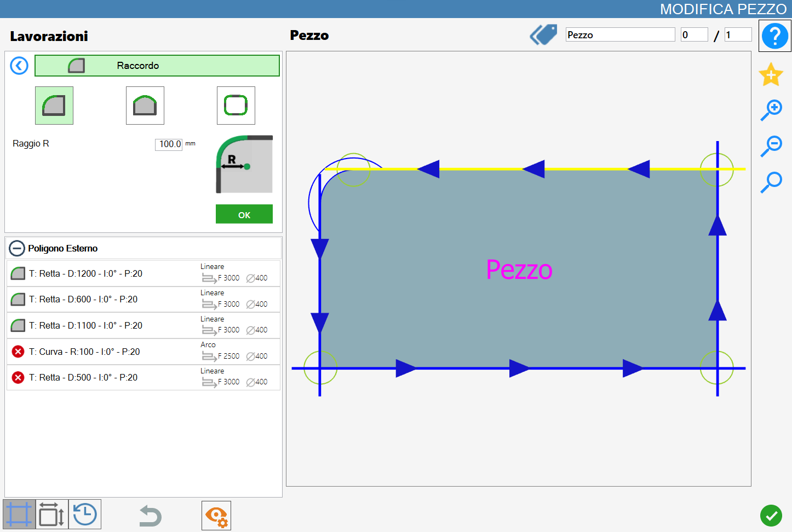
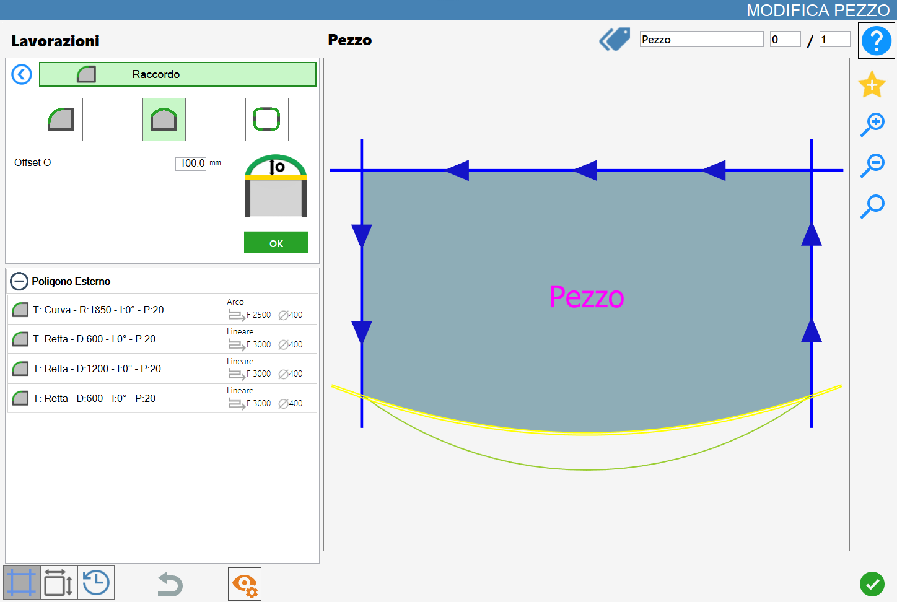
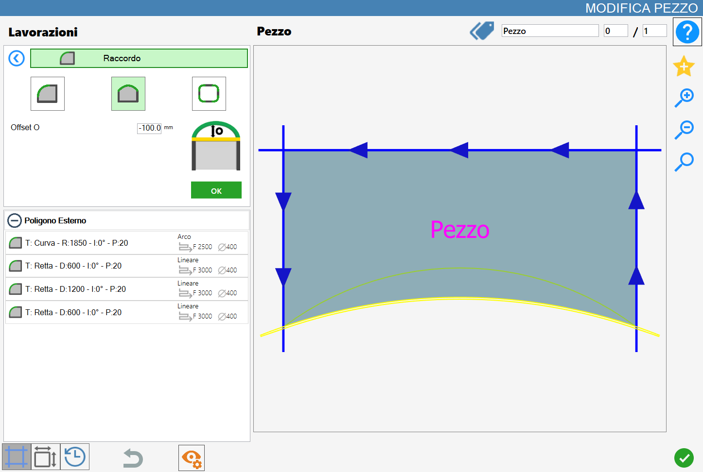
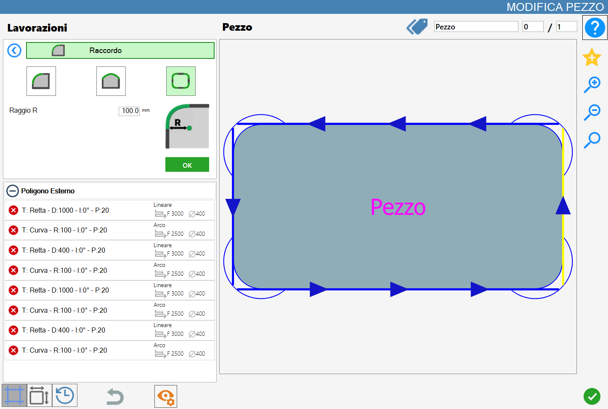

This functionality allows the operator to add a fillet to the vertex or to the side of the piece.
The interface for this function resembles the following image:

Parameters
NOTEThe 'Single vertex', 'Side' and 'Polygon vertices' modes are mutually exclusive: the activation of one excludes automatically the others.
Single Corner | |
 | Side |
 | Corners of polygon |
Parameters for 'Single vertex' and 'Polygon's vertices'
 | Radius R |
Parameters 'Side'
Offset 0 |
Execution work
NOTEIt is possible to apply processing by pressing the button on the left of the opportune cut in the list of polygons.An icon red with an 'X' indicates that the working cannot be applied to the desired cut.
Below is illustrated the application of fittings in the different modes. A preview of the working allows the operator to visualize the expected result. The actual application of the working will happen only after confirmation by means of the green 'OK' button.
ATTENTION!Each application of a fillet will lead to lose all the settings applied previously on the cuts of the piece.
Fitting execution on single vertex
Selecting this mode the working can be executed on the single vertices of the piece.
In order for the working to be correctly applied it is not possible set a measure of the radius parameter negative.
In the following example image three fillets with radius of 100.0 mm have been applied.

In the left cuts list, some consequences occur for every application of a vertex fitting:
If there are other workings, these will be removed.
A curve is inserted in the list, the new fitting.
The lengths of sides adjacent to the selected vertex are reduced by the measurement established by the Radius parameter.
Execution joint on side
Selecting this mode, the job can be performed on the sides of the piece. As regards the fillets in this mode, there are two main scenarios based on the value of the offset parameter: a positive value and a negative value.
In the example image below a fillet has been applied to the lower cut of the selected piece, with the offset parameter set to 100.0 mm.

The following image shows the opposite example compared to the previous case: a fillet has been applied to the lower cut of the selected piece, with the offset parameter set to a negative value of -100mm.

In the list of cuts on the left side, there are some consequences for each application of a fitting on side:
If there are other workings, these will be removed.
The cut of type line selected is replaced by a curved cut.
With a positive value of the parameter offset, the inserted fitting will be constituted by a curve receding from the selected polygon, whether it is internal or external.
On the contrary, with a offset negative value, the joint applied will be made up of a curve exiting the selected polygon.
Execution fillet on the vertices of the selected polygon
This mode allows to apply as many fillets as there are vertices of the selected polygon.
To allow the process to go well it is not possible to insert a negative radius measurement.
In the following image is showed the working on all vertices of the piece:

Analogously to the mode on the single vertices, using this mode in the list of cuts on the left manifest some consequences:
If are present other workings, these will be removed.
The cut of type line selected is replaced by a curved cut.
With a positive value of the parameter offset, the inserted fitting will be constituted by a curve recessed with respect to the selected polygon, whether it is internal or external.
Conversely, with a offset negative value, the joint applied will be constituted by a curve exiting with respect to the selected polygon.